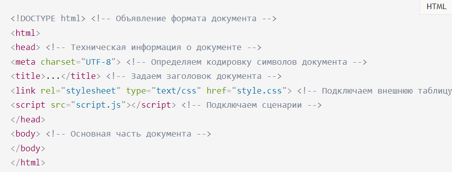
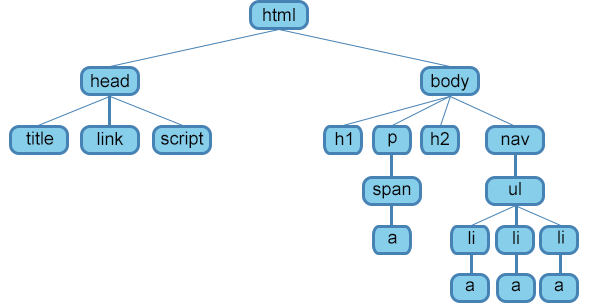
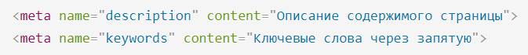
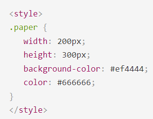
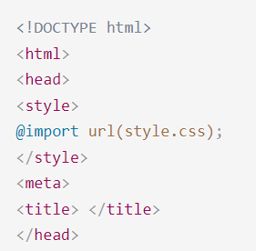
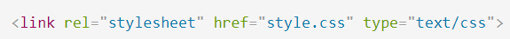

Основы HTML содержат основные правила языка HTML, описание структуры HTML-страницы, отношения в структуре HTML-документа между HTML-элементами.
HTML-документ — это обычный текстовый документ, может быть создан как в обычном текстовом редакторе (Блокнот), так и в специализированном, с подсветкой кода (Notepad++, Visual Studio Code и т.п.). HTML-документ имеет расширение .html.
HTML-документ состоит из дерева HTML-элементов и текста. Каждый элемент обозначается в исходном документе начальным (открывающим) и конечным (закрывающим) тегом (за редким исключением).
Язык HTML следует правилам, которые содержатся в файле объявления типа документа (Document Type Definition, или DTD). DTD представляет собой XML-документ, определяющий, какие элементы, атрибуты и их значения действительны для конкретного типа HTML. Для каждой версии HTML есть свой DTD.

Элементы, находящиеся внутри элемента , образуют дерево документа, так называемую объектную модель документа, DOM (document object model). При этом элемент является корневым элементом.

является потомком одновременно для
и .является родительским только для .
Является корневым элементом документа. Все остальные элементы содержатся внутри .... Все, что находится за пределами элемента, не воспринимается браузером как HTML-код и никак им не обрабатывается.
Раздел <head>...</head> содержит техническую информацию о странице: заголовок, описание, ключевые слова для поисковых машин, кодировку и т.д. Введенная в нем информация не отображается в окне браузера, однако содержит данные, которые указывают браузеру, как следует обрабатывать страницу.
Обязательным элементом раздела <head> является <title>. Текст, размещенный внутри элемента <title>, отображается в строке заголовка веб-браузера.
Длина заголовка должна быть не более 60 символов, чтобы полностью поместиться в заголовке. Текст заголовка должен содержать максимально полное описание содержимого веб-страницы.
Необязательным элементом раздела является элемент . С его помощью можно задать описание содержимого страницы и ключевые слова для поисковых машин, автора HTML-документа и прочие свойства метаданных.
Элемент может содержать несколько элементов , потому что в зависимости от используемых атрибутов они несут различную информацию.

Внутри этого элемента задаются стили, которые используются на странице. Для задания стилей в HTML-документе используется язык CSS. Таких элементов на странице может быть несколько.
Элемент может содержать код форматирования как самих элементов веб-страницы, так и веб-страницы целиком.

Задать стили для документа можно также при помощи другого способа — записать их в отдельный файл с расширением .css, например, style.css.

Элемент определяет отношение между текущей страницей и другими документами. Таких элементов на странице может быть несколько.

В разделе body располагается все содержимое документа.